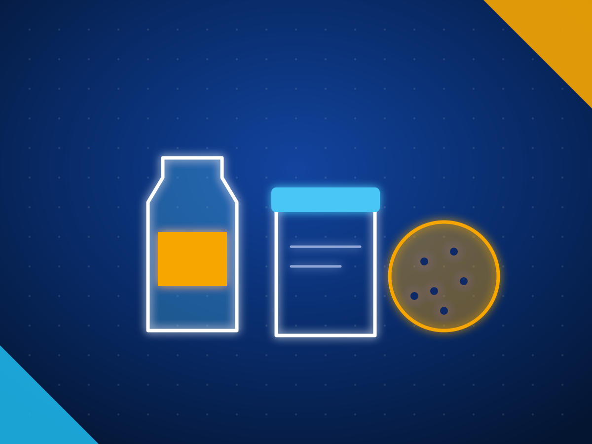

Processed food and beverage exporters in Sri Lanka: biscuits, sauces, drinks and feed
Sri Lanka's food and beverage exports rose 24.23% to US$583.89 million in 2025, and processed food rose another 34.19% to US$243.28 million in the first nine months of 2026, with non alcoholic beverages up 46.78%. The Export Development Board lists more than 110 food and beverage manufacturers and marketers making biscuits and wafers, confectionery, sauces, jams, cordials, ready to drink beverages, ready to serve food and animal feed. Most processed food exporters hold ISO 22000, HACCP, BRC, kosher or organic certificates.
Last reviewed 27 October 2026. Sources are linked next to each fact. We do not name buyers.

- US$583.89M
- food and beverage exports in 2025, up 24.23%
- +34.19%
- processed food exports, January to September 2026
- 110+
- food and beverage manufacturers and marketers
Sources: Export Development Board, 2025 export performance and January to September 2026 (via Newswire).
Processed food and beverages from Sri Lanka at a glance
| Main products | Biscuits and wafers, confectionery, sauces and condiments, jams, cordials and ready to drink beverages, ready to serve food, animal feed |
|---|---|
| Largest markets (latest EDB split, 2021) | India, US, Maldives, UAE, Australia for processed food; India, Vietnam and Japan for animal feed |
| Certificates commonly held | ISO 22000, HACCP, BRC, halal, kosher, organic |
| Documents | Export health certificate where the importing country asks for one; FDA food facility registration for the US |
| Watch for | Private label capacity varies by manufacturer, so confirm it early |
What Sri Lankan exporters supply
| Product | HS code |
|---|---|
| Sweet biscuits | 1905.31 |
| Waffles and wafers | 1905.32 |
| Sugar confectionery | 1704 |
| Jams, fruit jellies and purees | 2007 |
| Sauces, ketchup, chilli sauce and seasonings | 2103 |
| Food preparations, including beverage mixes and papadam | 2106 |
| Cordials and ready to drink fruit beverages | 2202 |
| Animal feed, including aquaculture and poultry feed | 2309.90 |
| Dog and cat food | 2309.10 |
HS codes at heading or six digit level. Confirm the national tariff line in your market with your customs broker.
Also traded as: Sri Lankan food products, private label biscuits, cordials, fruit drinks, chilli sauce.
Why buyers source processed food and beverages from Sri Lanka
- Food and beverage exports rose 24.23% to US$583.89 million in 2025, with processed food up 40.4%. EDB
- Processed food exports rose 34.19% to US$243.28 million in January to September 2026, and non alcoholic beverages rose 46.78%. EDB via Newswire
- The Export Development Board lists more than 110 food and beverage manufacturing and marketing organisations. EDB
- Most processed food exporters hold ISO 22000, HACCP, BRC, kosher or organic certificates. EDB food and beverage report
Certifications and standards to ask for
- ISO 22000 and HACCP. The baseline for export food plants. Ask for the certificate and its scope.
- BRCGS. Expected by many UK and EU retailers.
- Halal, kosher and organic. Listed by the Export Development Board among certificates Sri Lankan food exporters hold.
- Export health certificate. Issued by the Food Control Administrative Division where the importing country requires one.
- FDA food facility registration. Needed for any plant that makes or packs food for the US, renewed every two years.
Know this before you buy
- The Export Development Board publishes two 2025 totals for this sector, US$583.89 million and US$430.49 million, because the scope differs. We quote the first. EDB
- The sources we checked do not confirm private label capacity across the sector. Ask each manufacturer for private label references. EDB
- The Export Development Board lists high production costs, raw material shortfalls and imported machinery as weaknesses, which can affect minimum orders and lead times. EDB food and beverage report
Questions to ask a Sri Lankan food manufacturer
- Which food safety certificates does the plant hold, and does the scope cover my product?
- Do you make private label, and for which markets?
- What is the minimum order per SKU, and the shelf life?
- Can you meet my market's labelling and ingredient rules?
- Is the plant registered with the FDA, if I sell in the US?
How we help you source processed food and beverages
Tell us the spec
Product, grade, quantity, packing, destination port, the certificates you need and when you need the first shipment.
We shortlist exporters
We match you with Sri Lankan exporters who make that product and already ship to markets like yours, and check them before we introduce them.
You deal direct
Quotes and samples come from the exporters themselves and you choose. We stay on hand for the factory visit, the first order and the first shipment.
Tell us what you need to source
Send the product, grade, quantity, destination and the certificates you need. We reply within two working days with Sri Lankan exporters who make it and already ship to markets like yours.
Common questions
Which food safety certificates do Sri Lankan food manufacturers hold?
The Export Development Board reports that most processed food exporters hold ISO 22000, HACCP, BRC, kosher or organic certificates, and lists ISO 9000 and halal too. Ask for the certificate and its scope.
Is Sri Lanka's food export sector growing?
Yes. Food and beverage exports rose 24.23% to US$583.89 million in 2025, and processed food rose 34.19% to US$243.28 million in January to September 2026.
Can Sri Lankan manufacturers make private label food?
Some do. The sources we checked do not confirm it sector wide, so ask each manufacturer for private label references in your market. Tell us what you need and we will check before we introduce anyone.
Where do Sri Lankan processed foods sell?
The latest Export Development Board split, from 2021, shows India, the US, the Maldives, the UAE and Australia as the top processed food markets, and India, Vietnam and Japan for animal feed.
Other products from Sri Lanka
- Apparel and textiles
- Ceylon tea
- Ceylon cinnamon
- Coconut food products
- Coco peat and coir
- Coconut shell activated carbon
- Industrial and solid tyres
- Rubber gloves and rubber products
- Electrical and electronics
- Spices and essential oils
- Seafood
- Gems and jewellery
- Light engineering and machinery
- Boats and marine
- Fruits and vegetables
- Cut foliage and live plants
- Ornamental fish
- Ceramics and porcelain
- Printing and packaging
- Wood products and furniture
- Footwear and leather goods
- Graphite and minerals
- Ayurveda and herbal products
See also: All Sri Lankan export categories · How to import from Sri Lanka · Request a quote · For Sri Lankan exporters